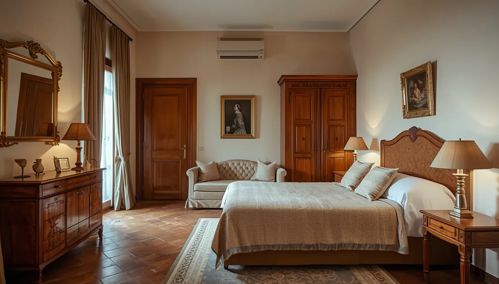
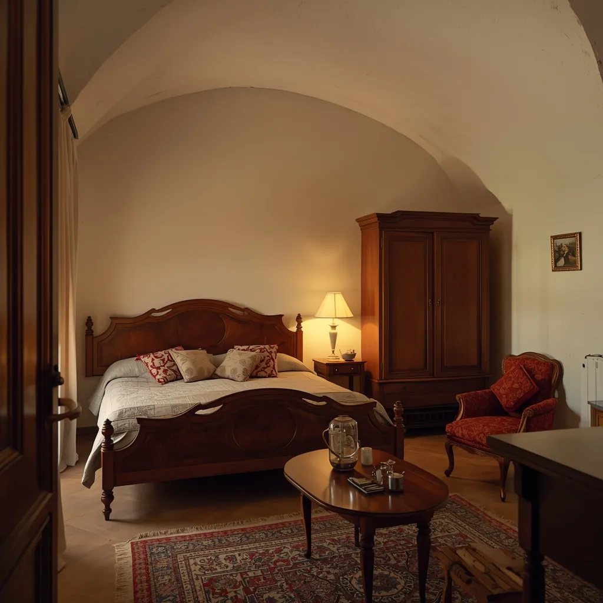

Hi ha una diferència enorme entre buidar un local comercial i buidar el pis on els vostres pares van viure quaranta anys. En el segon cas, cada calaix conté una història, cada moble té un nom i cada foto és irremplaçable. Si esteu cercant aquesta guia, probablement ja ho sabeu.
Buidar el pis d'una persona gran és una situació que milions de famílies afronten cada any a Barcelona i a tota Catalunya, i per a la qual ningú no està realment preparat. Ja sigui per un trasllat a una residència, per una defunció, o perquè la persona ja no pot viure sola, el procés combina logística pràctica amb una càrrega emocional real que no convé ignorar.
Aquesta guia us ajudarà a entendre per on començar, com organitzar-vos, què fer amb cada tipus d'objecte, com evitar els errors més freqüents i quan té sentit demanar ajuda professional.
Per què aquestes situacions són diferents d'un buidatge normal
Un buidatge ordinari —un pis d'estudiants, un traster, una mudança— és logística. El buidatge del pis d'una persona gran és una altra cosa. Hi ha diverses raons:
Càrrega emocional real
Dècades d'història familiar condensades en mobles, fotos, cartes i objectes quotidians. Cada decisió pot ser dolorosa.
Implicació familiar complexa
Diversos germans o familiars amb visions diferents sobre què conservar, què regalar i què llençar. El conflicte és freqüent.
Terminis que pressionen
La residència, el lloguer o la venda no esperen. Però les decisions emocionals no es poden prendre sempre a la mateixa velocitat.
Dècades d'acumulació
Un pis habitat durant 30–50 anys acumula un volum d'objectes que pot ser aclaparador per a una família que treballa i viu lluny.
Documents importants
Escriptures, testaments, cartilles bancàries, certificats, assegurances... barrejats amb dècades de papers. Cal revisar-ho tot.
La persona pot ser present
Si el trasllat a residència és recent, la persona gran pot participar o voler participar, cosa que requereix un ritme adaptat.

Guia pas a pas per a les famílies
Abans de començar: els errors més freqüents
La majoria dels problemes durant el buidatge del pis d'una persona gran no tenen a veure amb el treball físic, sinó amb la forma d'organitzar-se. Aquests són els errors que es repeteixen:
- Començar a moure coses sense un acord previ sobre els criteris de classificació
- Intentar fer-ho tot en un sol dia, especialment si la persona gran hi és present
- Prendre decisions individuals sense consultar la resta de la família
- Llençar documents sense revisar, pensant que són papers sense importància
- Barrejar el que es conserva amb el que es llença al mateix espai
- No fer fotos abans de desmuntar o retirar objectes
El procés recomanat pas a pas
-
Reunió familiar prèvia (abans de tocar res)
Abans d'obrir un sol calaix, és fonamental que tots els implicats acordin els criteris: què es conserva, qui decideix en cas de desacord, i com es reparteixen els objectes amb valor. Aquesta reunió evita la majoria dels conflictes posteriors.
Si hi ha tensió, fer-la fora del pis ajuda a mantenir la calma -
Revisar i apartar documents importants
És el primer que cal fer abans de començar el buidatge. Documents a buscar a tot el pis: escriptures, testaments, poders notarials, cartilles bancàries, assegurances de vida, títols universitaris, passaports, DNI, pensions, impostos. Guardar-los en una caixa separada i no moure'ls fins haver-los revisat amb calma.
Reviseu també butxaques de roba, llibres i calaixos de roba interior on es guarda diners -
Classificar els objectes en quatre categories
El sistema de quatre categories és el més senzill i el que menys conflictes genera:
- Conservar: objectes amb valor sentimental o pràctic que la família vol guardar
- Repartir: objectes que algun familiar concret vol emportar-se
- Donar o vendre: mobles, roba i estris en bon estat
- Gestionar: tota la resta (punts verds, recollida municipal, empresa de buidatge)
-
Treballar per zones, no per tipus d'objecte
És més eficient buidar habitació per habitació que intentar classificar "tots els llibres" o "tota la roba" alhora. Començar per les zones menys carregades emocionalment: traster, garatge, cuina. Deixar el dormitori i el menjador per al final, quan ja existeix un ritme de treball establert i les decisions són més fàcils.
-
Fotografiar abans de desmuntar
Abans de desmuntar mobles, retirar quadres o buidar prestatgeries, fer fotos. Serveix com a registre per a la família, ajuda a resoldre dubtes posteriors sobre "on era tal cosa?" i pot ser útil per a tràmits relacionats amb l'herència.
-
Gestionar els objectes segons el seu destí
Un cop classificat tot, gestionar cada categoria: els objectes per donar a través de Càritas, Creu Roja o Humana; els mobles amb valor a través de Wallapop o rastres locals; la resta a través del servei municipal de recollida de voluminosos o els punts verds. Si el volum és gran, contractar empresa especialitzada.
Vegeu secció "Què fer amb cada tipus d'objecte" més avall -
Neteja final del pis
Un cop buidat, el pis necessita una neteja completa per lliurar-lo, llogar-lo o vendre'l. Si hi ha dècades d'ús acumulat, pot requerir neteja profunda, desincrustació de bany i cuina, i pintura bàsica. Consulteu la nostra guia sobre com preparar un pis per a la venda.
Sistema de classificació: què conservar, què donar, què gestionar
Prendre decisions objecte a objecte és esgotador. Funciona millor establir criteris clars abans de començar i aplicar-los sistemàticament. Aquest sistema de classificació simplifica el procés:
Verd — Conservar
Objectes irremplaçables: fotografies, cartes, documents, joies familiars, objectes amb història personal clara. Sense límit de categoria.
Blau — Repartir en família
Mobles, vaixelles, llibres, roba de qualitat, quadres. Cada familiar indica què vol emportar-se. El que ningú vol passa a una altra categoria.
Groc — Donar o vendre
Objectes en bon estat que ningú de la família necessita. Mobles funcionals, roba usable, llibres, vaixella, electrodomèstics que funcionen.
Gris — Gestionar o reciclar
Tot el que no té valor sentimental ni d'ús: mobles deteriorats, roba en mal estat, objectes trencats, materials sense recuperar.
Matalassos (poden tenir diners guardats), butxaques de tota la roba, tots els calaixos (especialment els de la tauleta de nit i de l'escriptori), llibres (de vegades hi ha bitllets entre les pàgines), capses de sabates i bosses guardades en armaris alts. En pisos de persones grans és freqüent trobar diners, joies o documents en llocs inesperats.
Què fer amb cada tipus d'objecte
Mobles
Els mobles en bon estat tenen més sortida del que sembla, especialment els de fusta massissa o amb caràcter.
- Wallapop o Milanuncios per a mobles amb valor
- Rastres locals i botigues de segona mà
- Càritas o Creu Roja si estan en bones condicions
- Recollida municipal de voluminosos per a la resta
Roba
Fins i tot roba antiga pot tenir valor per a entitats socials o per al reciclatge tèxtil.
- Càritas i Creu Roja: roba en bon estat
- Contenidors taronges d'Humana (més de 900 a Barcelona)
- Punts verds per a roba molt deteriorada
- Vinted per a roba de qualitat amb valor
Electrodomèstics
Els electrodomèstics que funcionen tenen alta demanda. Els que no funcionen s'han de gestionar correctament.
- Wallapop per als que funcionen bé
- En comprar-ne un de nou: la botiga retira el vell gratis
- Punts Verds de Zona per a tots els tipus
- Recollida municipal per a rentadores i neveres
Fotografies i documents
Són els objectes més irremplaçables. Mereixen un tractament especial i mai no s'han de llençar sense revisar.
- Digitalitzar àlbums abans de distribuir-los
- Repartir còpies digitals entre tots els familiars
- Documents importants: al notari o als hereus
- Cartes i diaris: decidir en família amb calma
Llibres
Els llibres tenen més opcions del que sembla: moltes entitats els reben i algunes paguen per ells.
- Llibreries de segona mà: poden comprar col·leccions
- Biblioteques municipals: accepten donacions seleccionades
- Wallapop o Todocolección per a llibres amb valor
- Punts verds per als no recuperables
Joies i objectes de valor
És freqüent trobar joies, monedes antigues o bitllets. Cal tractar-los amb precaució.
- Apartar i documentar abans de qualsevol decisió
- En cas d'herència: inventariar abans de distribuir
- Consultar amb joier o numismàtic abans de vendre
- Si hi ha dubtes legals: consultar amb el notari
On donar a Barcelona: què accepten i què no
| Entitat | Mobles | Roba | Electrodomèstics | Llibres | Com contactar |
|---|---|---|---|---|---|
| Càritas Barcelona | Només en bon estat | Sí | Només que funcionin | Sí | caritasbarcelona.org |
| Creu Roja Catalunya | Selectiu | Sí | Segons delegació | Sí | creuroja.org |
| Humana | No | Sí (contenidors) | No | No | humana-spain.org |
| Wallapop / Milanuncios | Sí | Sí | Sí | Sí | App o web |
| Punt Verd de Zona | Sí | Sí | Sí | Sí | barcelona.cat |
| Recollida municipal | Sí (màx. 3) | No | Sí | No | 010 o web Ajuntament |

Situacions reals i com s'han resolt
Cas A: Trasllat urgent a residència — pis de 75m², Sarrià
Una família amb tres fills en diferents ciutats necessitava buidar el pis de la seva mare en 72 hores per poder-lo lliurar. Cap no es podia desplaçar amb prou temps. El nostre equip va realitzar el buidatge complet en dos dies, documentant fotogràficament cada habitació, apartant documents i objectes personals en una caixa que es va enviar a la filla gran, i gestionant la resta (mobles, roba, electrodomèstics) a través de donació i punts verds.
"El que més ens va sorprendre va ser el respecte amb què van tractar les coses de la nostra mare. Res no es va llençar sense estar classificat abans." — Família clienta, 2025
Cas B: Herència amb conflicte familiar — pis de 90m², Eixample
Quatre germans amb criteris molt diferents sobre què conservar. La solució va ser que l'empresa realitzés un inventari fotogràfic complet abans de moure res, que els germans rebessin l'inventari per acordar què es repartia, i que l'equip executés el pactat sense que cap germà hagués de ser present el mateix dia. Això va eliminar la tensió de prendre decisions en calent.
Heu de buidar el pis d'un familiar i no sabeu per on començar?
Podem orientar-vos sense compromís. Visitem el pis, valorem el contingut i us donem un pressupost tancat en menys de 24 hores.
Quan convé contractar un servei professional
Per a moltes famílies, gestionar el buidatge pel seu compte és perfectament viable. Per a altres, no. Aquestes són les situacions en què contractar una empresa especialitzada sol ser la millor decisió:
El pis està molt ple
Dècades d'acumulació generen un volum que és impossible de gestionar en unes poques visites de cap de setmana.
La família viu lluny
Si cal desplaçar-se des d'una altra ciutat o país, el cost dels viatges i el temps perdut superen de bon tros el cost del servei.
Hi ha terminis urgents
Data límit per lliurar el pis, contracte d'arrendament que comença, o procés de compravenda en marxa. Una empresa pot fer-ho en 1–3 dies.
El procés genera conflictes
Quan la família no es posa d'acord, comptar amb un tercer professional que gestiona el procés pot desbloquejar la situació.
Defunció recent
En els primers dies o setmanes, la càrrega emocional fa molt difícil prendre decisions sobre els objectes. Una empresa pot fer-se càrrec de la part logística.
Hi ha acumulació severa
Si hi ha dècades d'objectes barrejats, residus o condicions difícils, el treball físic i la gestió de residus requereixen equipament i experiència.
Es necessita neteja profunda
Per preparar el pis per a la venda o el lloguer, la neteja integral després del buidatge és més eficient si la gestiona la mateixa empresa.
La persona gran participa
Si la persona gran vol ser present o participar en les decisions, tenir un equip professional que porta el ritme facilita el procés per a tothom.
VaciadoDePisos.cat: tracte humà i experiència real
Som una empresa local, amb seu a Sant Pere de Ribes, amb experiència real en buidatges de pisos de persones grans a tota l'àrea metropolitana de Barcelona i la comarca del Garraf. No és només treball físic: és saber que darrere de cada calaix pot haver-hi alguna cosa irremplaçable.
Com treballem en aquestes situacions
- Inventari fotogràfic complet abans de moure res. La família rep el registre de tot el que hi havia al pis
- Documents i objectes personals a part des del primer moment: DNI, escriptures, fotografies, joies, diners en efectiu. Lliurats a la família amb inventari signat
- Pressupost tancat després de la visita gratuïta. Sense sorpreses al final
- Ritme adaptat a la família: si algú de la família vol ser present, coordinem les visites
- Gestió legal de residus amb certificat de l'Agència de Residus de Catalunya
- Discreció total: treballem amb discreció a l'edifici i respectem la privadesa de la persona i de la família en tot moment
- Servei urgent disponible en 24–48 hores si la situació ho requereix
Si ho necessiteu, també podem gestionar la neteja profunda del pis un cop buidat, o coordinar-nos amb una immobiliària o amb el notari. Un sol interlocutor per a tot el procés.
On prestem aquest servei
La part emocional: com gestionar-la
Aquesta és, amb diferència, la part més difícil del procés. No hi ha una fórmula que funcioni per a tothom, però aquestes orientacions ajuden a la majoria de les famílies:
Si la persona gran encara és viva
- No prendre decisions per ella. Si pot participar, ha de fer-ho. La seva opinió sobre les seves pròpies pertinences és la més important.
- Respectar el seu ritme. El que per a la família és urgent, per a ella pot ser devastador. Donar temps és donar-li dignitat.
- No obligar-la a desprendre's de res abans d'estar preparada, llevat que sigui absolutament necessari.
- Parlar dels objectes com al que són: història familiar, no escombraries. Preguntar què significa cada cosa important per a ella pot ser valuós per a tothom.
Si la persona ha mort recentment
- No hi ha pressa per decidir què es llença, llevat que hi hagi terminis reals. Esperar unes setmanes abans de començar sol ser millor decisió.
- Fer el procés acompanyat. Buidar el pis sol és molt dur. Fer-ho amb algú de confiança ho fa més portador.
- Guardar més del que sembla necessari. És més fàcil desprendre's d'alguna cosa passat un temps que penedir-se d'haver-la llençat.
- Digitalitzar fotografies i documents abans de prendre cap decisió sobre ells.
Si hi ha terminis urgents però la càrrega emocional és gran, una bona estratègia és fer servir una empresa per gestionar la part logística (mobles, estris, neteja) i dedicar el temps familiar als objectes amb càrrega sentimental real. Separar les dues tasques fa que totes dues siguin més manejables.
Preguntes freqüents
El més important és no precipitar-se. El primer pas és una reunió familiar per acordar els criteris de classificació abans de començar a moure res. Després, dividir el procés en diverses visites i començar per les zones menys carregades emocionalment (garatge, traster, cuina). Deixar les habitacions i els objectes amb més càrrega sentimental per quan ja existeixi un ritme de treball establert.
Depèn de la mida del pis, el volum d'objectes i la disponibilitat familiar. Un pis de 60–80m² amb molts objectes pot requerir entre 3 i 10 dies de treball real. Si la família ho gestiona en visites de cap de setmana, pot allargar-se setmanes o mesos. Si es contracta una empresa especialitzada, un pis complet se sol resoldre en 1–3 dies de treball.
El cost varia segons la mida del pis i el volum d'objectes. Un pis estàndard de 60–80m² sol costar entre 1.150€ i 2.500€ per a un buidatge complet. Si es combina amb neteja profunda o petites reparacions, el cost pot oscil·lar entre 2.000€ i 4.000€. Consulteu la nostra guia de preus actualitzada. Sempre s'ofereix valoració gratuïta i pressupost tancat.
Les opcions són: conservar el que tingui valor per als familiars, vendre els mobles amb valor a Wallapop o rastres locals, donar a Càritas o Creu Roja els que estiguin en bon estat, i gestionar la resta a través dels punts verds municipals o la recollida de voluminosos de l'Ajuntament. Una empresa de buidatge pot encarregar-se de tot aquest procés de classificació i distribució amb una sola trucada.
El més important és donar temps al temps. No hi ha pressa per prendre decisions sobre objectes amb càrrega sentimental. Es recomana fotografiar els objectes abans de desfer-se'n, repartir els objectes significatius entre la família abans de prendre decisions definitives, i digitalitzar fotografies i documents abans de descartar-los. Si la persona gran hi és present, respectar el seu ritme és fonamental.
És un dels conflictes més freqüents. El més útil és acordar un procés clar abans de començar: quins criteris s'usen i qui té l'última paraula en cas de desacord. Si hi ha tensió real, comptar amb una empresa professional que gestioni el procés pot ajudar: la discussió es desplaça del "què llencem" al "què ens enduem", que és molt més manejable.
No sempre. Si la persona gran està en condicions de participar i vol fer-ho, la seva presència pot ser molt positiva. Si el trasllat va ser per defunció o la persona no està en condicions de participar, la família gestiona el procés. En qualsevol cas, el ritme s'ha d'adaptar a la situació emocional de tots els implicats.
Quan hi ha terminis ajustats, contractar una empresa especialitzada és l'opció més pràctica. Una empresa pot buidar un pis complet en 24–48 hores amb tota la gestió de residus inclosa. Això permet a la família centrar-se en els objectes amb valor sentimental mentre els professionals s'encarreguen de la logística. Consulteu el nostre servei urgent.
Aquest és un moment que requereix molta paciència i empatia. No es pot ni s'ha de forçar ningú a desfer-se de les seves pertinences en contra de la seva voluntat. Si la persona gran viu al pis, el procés s'ha de fer amb la seva participació i al seu ritme. Si hi ha una situació d'acumulació que suposa un risc real per a la salut, pot ser necessari consultar amb els serveis socials. Consulteu la nostra guia sobre la Síndrome de Diògenes.
Per a pisos petits amb poc contingut i família disponible, fer-ho pel compte propi pot funcionar bé. Per a pisos amb molts objectes, quan la família viu lluny, hi ha terminis urgents o el procés genera conflictes, contractar empresa especialitzada sol ser la millor decisió. El cost s'amortitza en temps estalviat, en evitar conflictes i en la tranquil·litat que tot es gestiona correctament.
Els documents importants (escriptures, testaments, cartilles bancàries, DNI, passaports, assegurances, impostos) s'han d'apartar en primer lloc i lliurar-los als hereus. Les fotografies i àlbums s'han de digitalitzar i repartir entre la família. Les cartes i diaris mereixen una decisió col·lectiva i sense presses. Una empresa professional sempre aparta i documenta els objectes personals abans d'iniciar el buidatge.
Conclusió: no esteu sols en aquest procés
Buidar el pis d'una persona gran és una de les tasques més carregades de la vida familiar adulta. Combina el dol, la logística, els terminis, els desacords i el pes de tota una història familiar en un sol procés. No és una cosa que s'hagi de fer perfecte, ni ràpid, ni sense ensopegades emocionals.
El més important és tenir un pla, prendre's el temps necessari per a les decisions que importen, i no carregar amb tot el pes logístic si hi ha altres formes de gestionar-ho.
Si necessiteu ajuda professional per al buidatge, per a la neteja posterior o per a la preparació del pis per a la venda, el nostre equip està disponible per orientar-vos sense compromís. No venem: primer escoltem i expliquem quines opcions teniu.
Heu de buidar el pis d'un familiar a Barcelona o la comarca?
Visita gratuïta, pressupost tancat i discreció total. Portem més de 750 famílies acompanyades en aquest procés.